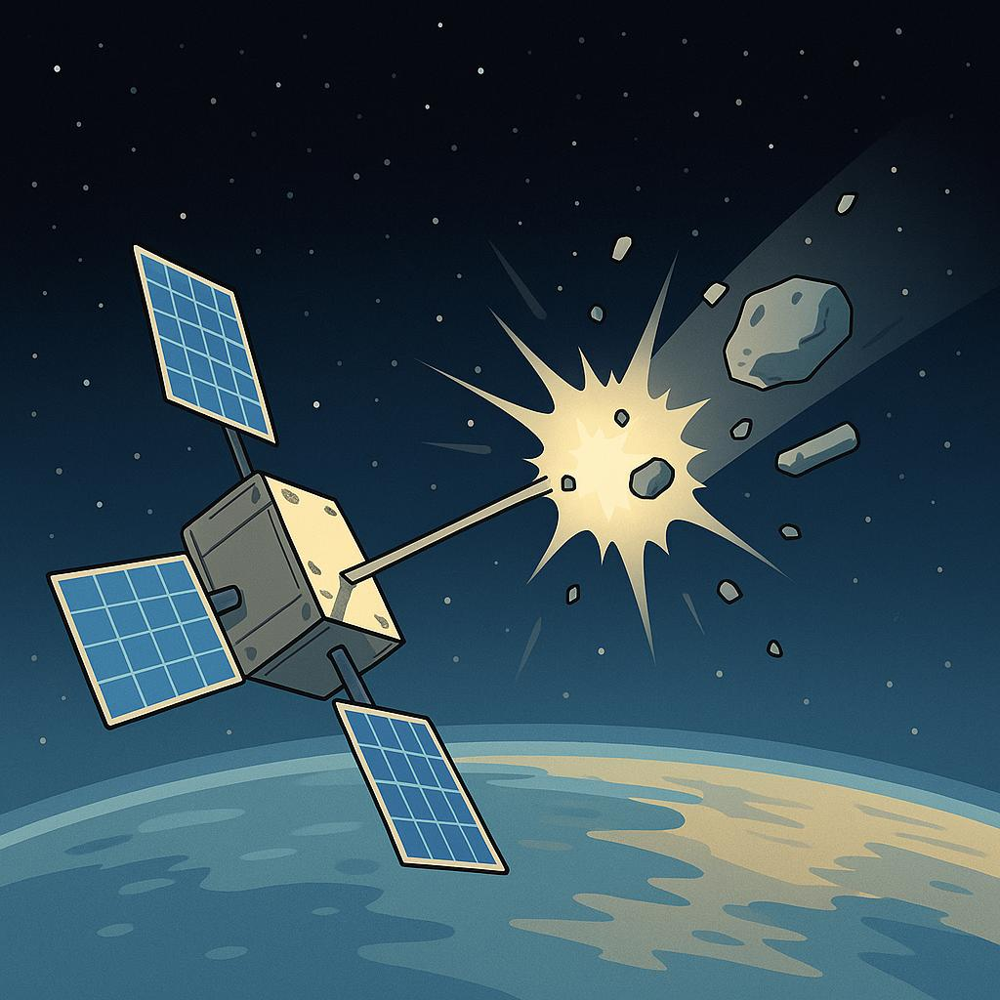

🪐 Introducción
El espacio no está tan lejos como parece. Cada día, miles de satélites giran alrededor de la Tierra para ayudarnos a comunicarnos, orientarnos o estudiar el clima. En esta práctica daremos nuestros primeros pasos como ingenieros espaciales, construyendo una maqueta inspirada en los CubeSats: pequeños satélites educativos.
No lanzaremos nada al cielo, pero sí pensaremos, diseñaremos y probaremos como lo haría una misión real. Nuestro reto: crear un satélite en forma de cubo con una antena y tratar de derribarla usando una canica y una rampa. Un desafío simple… pero lleno de ingenio.
Satélite en peligro por basura espacial
